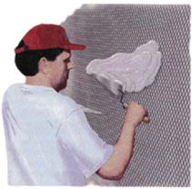

PROGRESSION OF STEPS
Aren't you sick of squares!" Carol exclaimed, summing up our feelings after framing and Sheetrocking the main section of our saltbox-style home. Even though our wooden house in the forest blended nicely with the natural surroundings, its framing, siding and paneling all met at sharp angles and created flat surfaces.
When it came time to add on a bathroom, we laid a meandering stone foundation, at first ignoring the fact that all the materials on the job came in rectangles. We figured out how to frame and Sheetrock curved walls on top of the stone work. We installed a roof system from rough-cut lumber... no easy task. But when finally it came time to choose a medium to seal our walls - one that would flow with the curves and the arched ceiling - we were left scratching our heads. I'd used mortar stucco for chinking log cabins and for flat exterior walls, so we decided to try it on the bathroom. The result is a classical masterpiece, complete with gentle, artistic curves and a gray earthy texture. And to top it off, it was affordable and fun to install.
The basic stucco described here consists of a layer of masonry wire (also called diamond lathe) and two coats of mortar. The masonry wire provides a rigid structure upon which you put a "scratch" coat followed by a finish coat of mortar. Regardless of the surface to be covered - be it a flat or curved wall, a ceiling or a space between two logs - if you can shape and attach the masonry wire effectively over the surface, the stucco will adhere and stay put.
Masonry wire comes in sheets, and most general building or masonry supply yards stock it. Note that it doesn't usually come in the conventional 4' x 8' sheet size. In fact, the wire I encountered most recently came in 27" x 90" sheets, running $6.65 each, making it by far the most expensive part of the project. When tracking down the masonry wire, be sure to ask what size sheets are available so you can accurately figure out how many are needed. The stucco itself is a basic, super cheap mortar made of sand, which runs about $12 a ton around here, and mortar mix, which costs about $7 a bag.
To figure the amount of materials you'll need, first multiply the length times the height of the surface to he covered to get the total square footage. For example, if a wall to be stuccoed is 8' x 10', that's 80 square feet. With wire sheeting in the 27" x 96" size, this would require five sheets. (Allowing for a slight overlap, each sheet covers 2' x 8', or a total of 16 square feet; 80 divided by 16 gives us five sheets.) Figuring the amount of sand and mortar mix you'll need is not nearly as exact a science. In general, however, a ton of sand is a heavy load for the average pickup, and I figure on three bags of type "N" mortar mix to the ton (combined, this can easily cover 500 square feet). In our case, one bag of mortar mix and a third of a ton of sand provided more than enough stucco for our bathroom for about $12. With the extra, we'll be able to put in those horseshoe pits we've been wanting.
To get started prepare whatever wall or surface is to be covered, completing all insulating, wiring, plumbing, sheathing or other preliminaries. The masonry wire can be nailed directly over wallboard, plaster, plywood or any interior paneled surface. Likewise, on the exterior the wire can cover clapboards, sheathing or any sturdy siding. The wire can also be nailed directly to studs so that it spans the gaps by itself, but applying the first coat of mortar will be more difficult without some backing behind the wire to keep the mortar from pushing completely through.
To cover your prepared surface with the masonry wire, attach with 1/2" galvanized roofing nails. Using galvanized nails keeps rusty heads from showing through the stucco should moisture become present. Standard tin snips work fine for cutting the sheet wire. Be sure to wear heavy work gloves and be careful of the very sharp edges that are left wherever the wire is cut. Also, be sure to overlap the wire sheets an inch or more wherever they meet so as to avoid making extra cuts.
Once the wire surface is prepared, mixing and applying the scratch coat is next. To mix the scratch coat, shovel 3 parts sand to 1 part type "N" mortar mix into a wheelbarrow, being sure to keep the same size shovelfuls of each. We found that six shovels of sand and two shovels of mortar mix is a good-size load with which to begin. It provides plenty of mortar to work with, but not so much that some gets hard before it can be applied.
Next, use a hue to chop the still dry ingredients back and forth in the wheelbarrow until they are fully mixed. Then add water and chop it in. You want the mix to reach a consistency where the entire batch is moist but not runny. Don't get discouraged - getting the proper amount of water in the mix is quite difficult and frequently eludes even the pros. To get it just right, add small amounts of water and chop it in thoroughly. If it's still too dry, add another small amount, mix again and so on. Likewise, going from too dry to too wet takes an amazingly small amount of water, so if you get the mix too sloppy, just chop in some more dry ingredients, being careful to add them at the 3:1 ratio. From experience I can tell you that mustering some patience at this stage will serve you well.
The first stucco coat - or scratch coat - meshes around the wire, thereby anchoring the mortar layer to the wall or ceiling. It has a very rough outer layer and provides an excellent bonding surface for the finish coat. Apply the scratch coat using two trowels, allowing the tools to leave plenty of marks. I prefer using a large brick mason's trowel for grabbing mortar from the wheelbarrow and then holding it horizontally against the wine. Then I use a smaller trowel to spread the glob of mortar onto the wire in several strokes.
You'll find that a certain amount of pressure works best: press too hard and you'll push the mortar though the wire completely, too soft and you won't seat the mix into the wire properly. After some trial and error, we found that it's best to start in one place. Begin by teasing the first trowels of mortar into the wire mesh and then work the rest of the stucco back into that patch, as it is easiest to spread back to an area that is already sticking. The scratch coat should be rough, providing plenty, of textured surface for the final coat to adhere to, so don't worry if some areas show a bit of wire; it got the name "scratch coat" for this very reason.
Drying time for the scratch coat depends on the conditions. Hotter air causes the mortar to set up quickly, while cold situations delay curing. When the scratch coat dries to the touch, it's ready to take the finish coat. Usually, overnight is plenty of time for the first layer to set up under any conditions. Note, however, that mortar should never be allowed to freeze before setting up, as this arrests the hardening process and ruins the stucco entirely.
With the scratch coat hard and dry, it's time to apply the finish coat. You will find that spreading mortar over the scratch coat allows for greater control of the final result than did working straight to the wire. Also, using a two-coat method creates a stronger surface than would a single coating of mortar on wire.
Use the same 3:1 mortar mix that you used for the scratch coat, except add a bit more water so that it is more fluid. This extra moisture is needed to make the finish coat spreadable over the now dry, porous base coat. Tool the finish coat over the scratch coat using the same troweling rnethod as before. Some people prefer the finished stucco with very obvious tooling marks, while others like a smoother finish. These differences in texture are simply achieved according to how smooth or rough you spread the finish coat with your trowel.
I prefer the smoother finish, since tooling marks remain obvious even when you try to minimize them. You may wish to experiment in an area first, and when you get the effect you prefer, you can go back over the whole test area again with the final layer.
The finish coat dries quite quickly and the color will become slightly more white as it cures fully over about ten days. Note that it's very difficult to work the finish coat in hot weather in the direct sun. If you find yourself in these conditions, try to situate a tarp to provide shade in the work area. Also, an occasional misting of the completed stucco with a hose over the first couple of hours can help prevent small cracks from forming as a result of rapid drying.
We are very pleased with the stucco in our bathroom, which has made it the showpiece of the house. This easily installed, affordable wall finish provides years of durable surfacing and is a great way to add texture and earthiness to any dwelling. Indeed, it's the rare project - both fun and, for a relatively short time investment (our intricate bathroom took only four days), a great way to enhance the visual element of any room in the house.
|
studs and insulation sheetrock, sheating etc.,masonry wire and roofing nails, rough scratch coat, smooth finish coat |
sand type ""N"" mortar mix water Recipe: 3 parts sand, 1 part mortar mix. Chop thoroughly when dry. Carefully add water and mix with hoe to desired consistency. |
 Spread as you would icing on a cake |
|
|
|
|